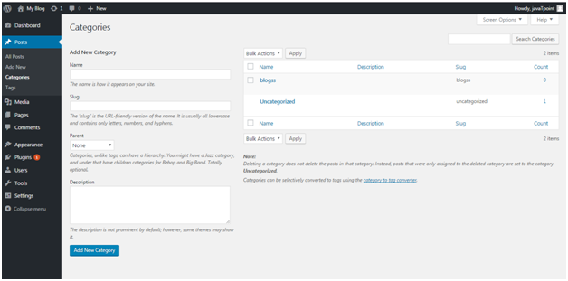
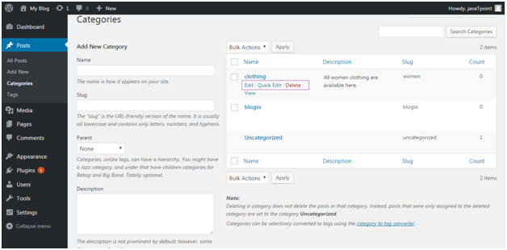
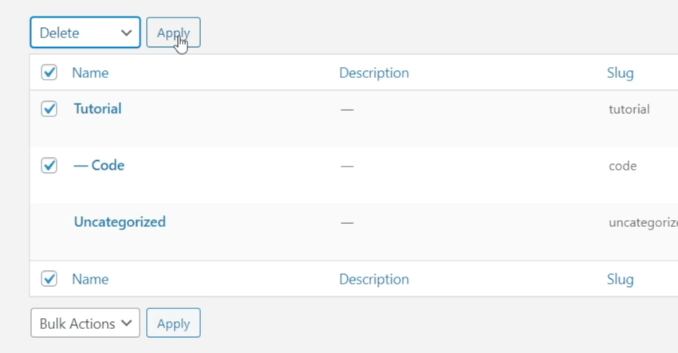

WordPress Catagories
DASHBOARD >> Posts >> Catagories
What is Catagories in Wordpress ?
Categories are one of the two predefined taxonomies in WordPress (the other being tags). They’re a way of grouping related content; think of them as being like labels.
Categories are the most general method of grouping content on a WordPress site. A category symbolizes a topic or a group of topics that are connected to one another in some way.
To edit the categories on your site, go to Posts / Categories:
For instance, if we write a post announcing a piece of latest news, we may put it in the “News” category. If no category is added, then by default category is uncategorized .
Add New Catagories
Add a new one by clicking on Add New Category and filling in the details you want. There are four fields to be filled when adding a new category:
- Name - Name of category which has to be unique
- Slug - It is used in the URL to display your category. For example, if your category is Clothing and slug is women, then your URL will be like shopping.com/shop/women.
- Parent - Here, you can add sub-categories to a category or you can choose none. This is optional.
- Description - Descriptions are optional. You can add a brief description to your category.
After filling all the above entries, click on Add New Category button. On the right side of the page your new category will be added.
Edit Catagories
If you want to edit the categories we’ve just created go to Posts > Categories and you’ll see a list of all the categories (from this page you can also add a new one, even including a description for more detail).
Edit - It allows you to edit all the fields name, slug, parent and description.
Quick Edit - it only allows you to edit name and slug.
After completing the edit click on Update/Update Category button.
Delete Catagories
You can delete categories from the above snapshot. By deleting a category, its posts will not be deleted instead they will be transferred to by default category (if that post will not be listed under any other category).
Please remember you can't delete a by default category, before deleting it assign by default status to some other category.
If you delete a category which is the parent of another, those child categories will be moved up a level.